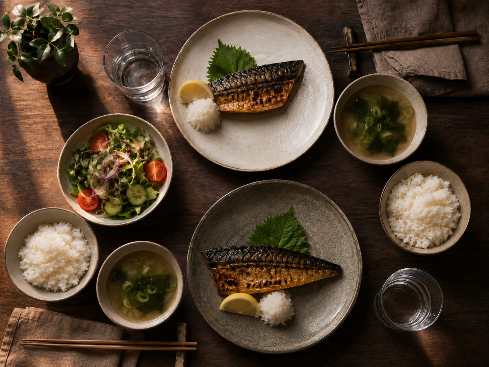

減塩の宅配食
「減塩」に、
基準はない。塩分を抑えた宅配弁当・1食2g以下で選ぶ
パッケージの「減塩」という表記に、法律上の定義はありません。何と比べて減っているのかが書かれていないためです。見るべきは食塩相当量の実数値だけです。

減塩の宅配食｜結論だけ知りたい方へ
日本人の平均は1日10g前後です。1食2g以下のものを1食入れるだけで、1日の合計が大きく変わります。自炊で毎食2g以下に収めるのは、計量しない限り困難です。
わんまいる 健幸ディナー
5食セット主菜1品と副菜2品が個包装で届く冷凍おかずセット。食材は国産100%で、合成保存料と合成着色料は不使用。5食平均でたんぱく質20g以上、糖質30g以下、塩分3.5g以下、400kcal以下と数値が公開されています。1ヶ月間で同じメニューが出ない構成。湯せんか流水解凍で用意します。
セット内容と価格を見る ＞どこで塩分を摂りすぎているか
食卓で振る塩は全体のごく一部です。大半は汁物、加工品、調味料から入ります。汁を残すだけで数グラム変わります。
薄味に慣れるまで
減塩を始めた最初の1週間は物足りなく感じます。味覚は2週間ほどで慣れます。ここで諦める人が多いのですが、慣れたあとは元の濃さが塩辛く感じるようになります。
数値が管理されているサービス
宅配弁当のタイヘイ
定期は送料無料シリーズ累計5,300万食。専門医が監修し、管理栄養士が献立を作成しています。ヘルシー御膳は1食200kcal、食塩相当量2.2g以下。骨取り魚を使うなど食べやすさへの配慮もあります。管理栄養士に相談できる窓口があるのが特徴です。
メニューと価格を見る ＞メディカルフードサービス
総出荷600万食消費者庁の指針に基づいて栄養価を管理した宅配食。エネルギー、塩分、たんぱく質、それぞれを「かなり抑える」「少し抑える」の段階別に選べるのが他社との違いです。凍結含浸法という特許技術のやわらかシリーズも扱っています。創業15年以上の専門企業。
シリーズと価格を見る ＞医師から具体的な数値の指示が出ている場合は、その数値に従ってください。複数の制限がある場合は段階を選べるサービスが確実です。
減塩の宅配弁当を実際に選ぶ手順
商品ページには数十種類のメニューが並びます。どれを選べばいいか分からなくなるので、順番を決めてください。
減塩で失敗する3つのパターン
数値だけ守っても、続かなければ意味がありません。実際に多い失敗を挙げます。
- 宅配弁当だけ減塩にして、他が変わらない。夕食を2gに抑えても、昼にラーメンを食べれば1日で8gを超えます。宅配食は下限を保証する手段であって、他を自由にする免罪符ではありません
- 物足りなさを醤油で補う。せっかく計算された数値が崩れます。足すなら酢、レモン、こしょう、生姜。塩味ではなく輪郭を足してください
- 一気に落としすぎる。10gから6gへ急に落とすと、食事が苦痛になります。2週間で1gずつ下げると、味覚が追いつきます
調味料を変えるだけで減る量
宅配弁当以外の食事でも使える調整です。同じ料理のまま、調味料の選び方で数値が動きます。
| 変更前 | 変更後 | 1回あたりの差 |
|---|---|---|
| 濃口醤油 小さじ1（0.9g） | 減塩醤油 小さじ1（0.45g） | −0.45g |
| ソース 大さじ1（1.0g） | ポン酢 大さじ1（0.7g） | −0.3g |
| めんつゆで煮る | だしと少量の醤油で煮る | −0.5〜1g |
| 味噌汁を飲みきる | 具だけ食べる | −1.0g |
| 漬物 小皿1（1.0g） | 酢の物 小皿1（0.3g） | −0.7g |
1日3〜4箇所で調整すれば、それだけで2g前後減ります。宅配弁当と組み合わせると6g未満に届きます。
外食が避けられない日
仕事の付き合いや会食は断れません。この日を含めて1週間で考えてください。
外食の日は8〜10g摂ることになります。その前後2日を宅配弁当で4〜5gに抑えれば、週の平均は目標圏内に入ります。1日単位で完璧を目指すより、週単位で調整するほうが現実的です。
外食での具体的な選び方は料理をしない人のページにまとめました。定食を選んで汁を残す、これだけで2g以上変わります。
比較して選ぶ